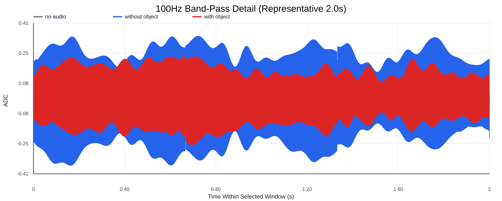
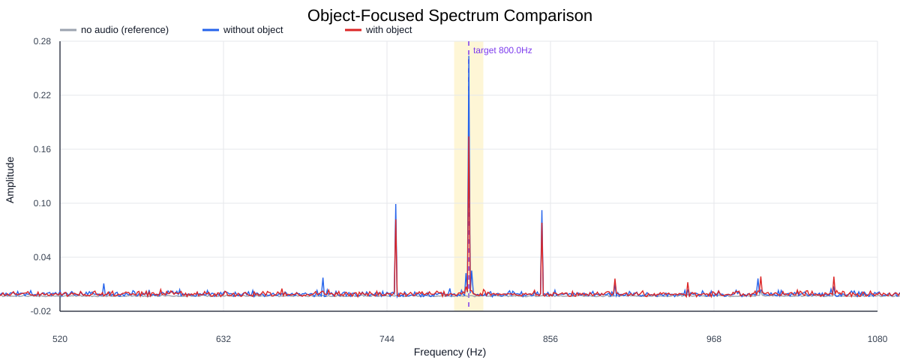
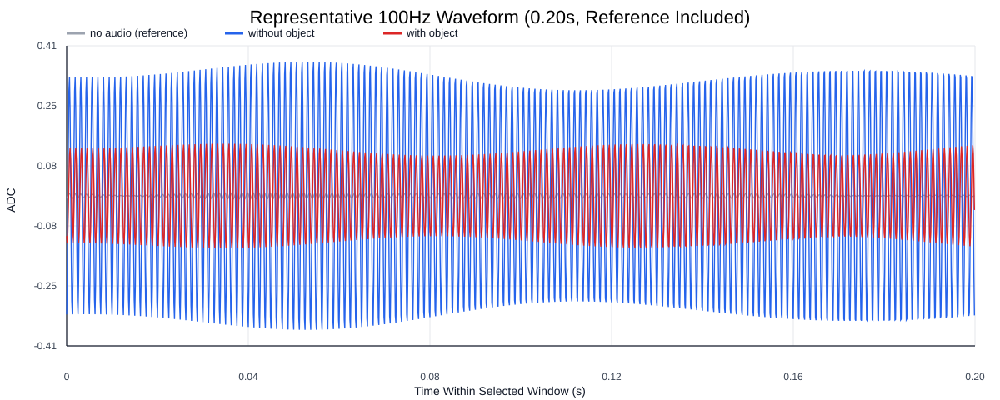
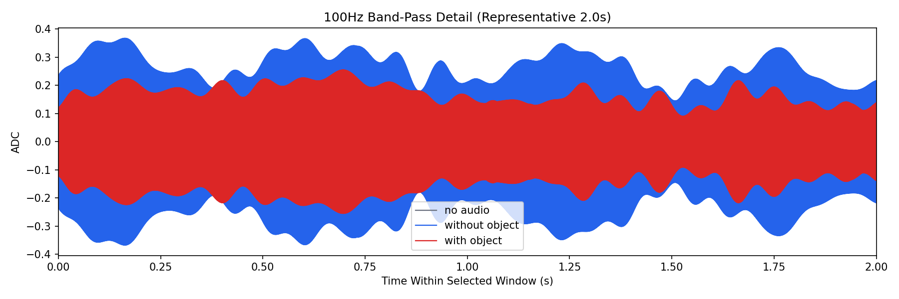
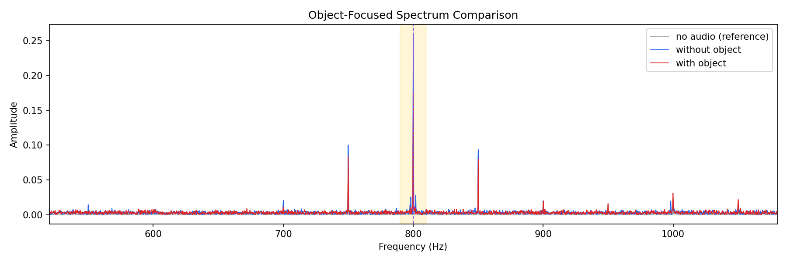
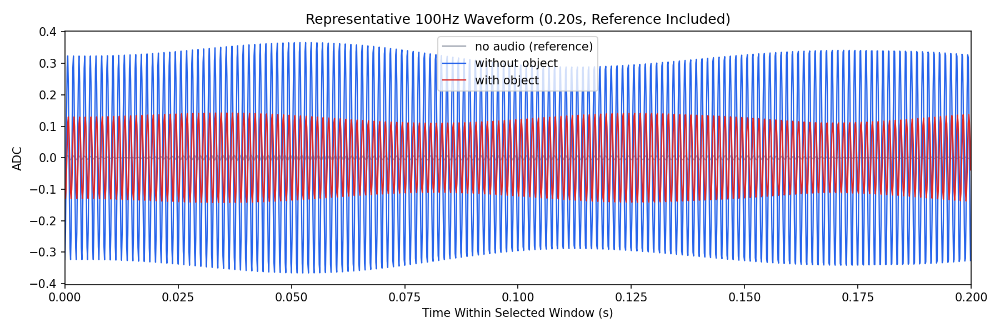

Background: F:\项目类文件夹\异物检测4.10\Data_Dual\frequency_sweep\0800Hz\repeat_05\raw\no_audio.csv
Without object: F:\项目类文件夹\异物检测4.10\Data_Dual\frequency_sweep\0800Hz\repeat_05\raw\without_object.csv
With object: F:\项目类文件夹\异物检测4.10\Data_Dual\frequency_sweep\0800Hz\repeat_05\raw\with_object.csv
| Metric | 无音频 | 100Hz无异物 | 100Hz有异物 | 无异物/无音频 | 有异物/无异物 | 有异物/无音频 |
|---|---|---|---|---|---|---|
| centered_rms | 0.084701 | 0.382286 | 0.351568 | 4.5134 | 0.9196 | 4.1507 |
| raw_target_amp | 0.000636 | 0.260162 | 0.173088 | 408.8018 | 0.6653 | 271.9790 |
| filtered_rms | 0.006620 | 0.190190 | 0.125068 | 28.7314 | 0.6576 | 18.8936 |
| filtered_target_amp | 0.000636 | 0.260162 | 0.173088 | 408.8019 | 0.6653 | 271.9790 |
| filtered_energy_ratio | 0.006108 | 0.247514 | 0.126553 | 40.5244 | 0.5113 | 20.7200 |
| window_filtered_target_amp_mean | 0.007478 | 0.263499 | 0.171754 | 35.2374 | 0.6518 | 22.9684 |
| window_filtered_target_amp_std | 0.004888 | 0.052415 | 0.039979 | 10.7234 | 0.7627 | 8.1792 |





